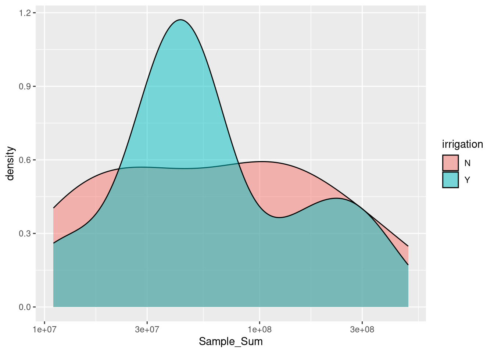
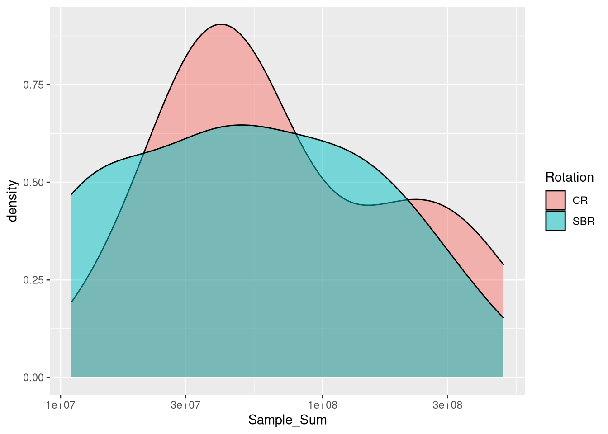
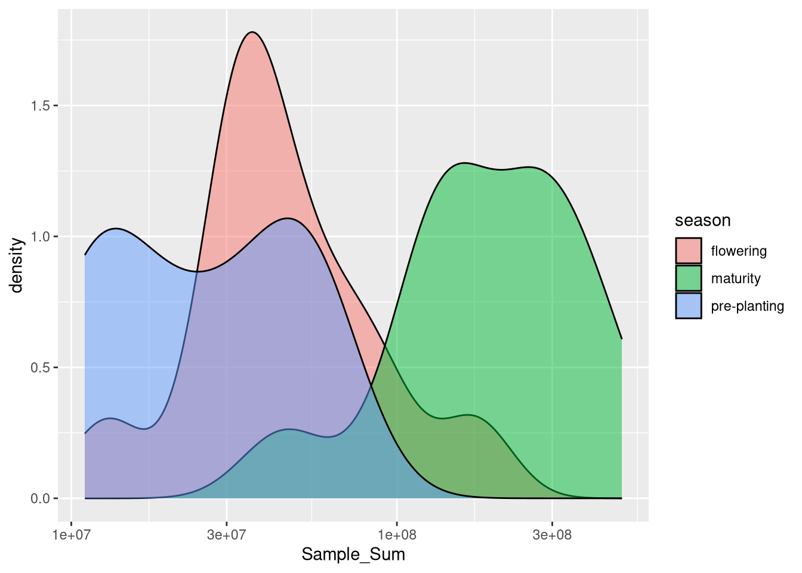
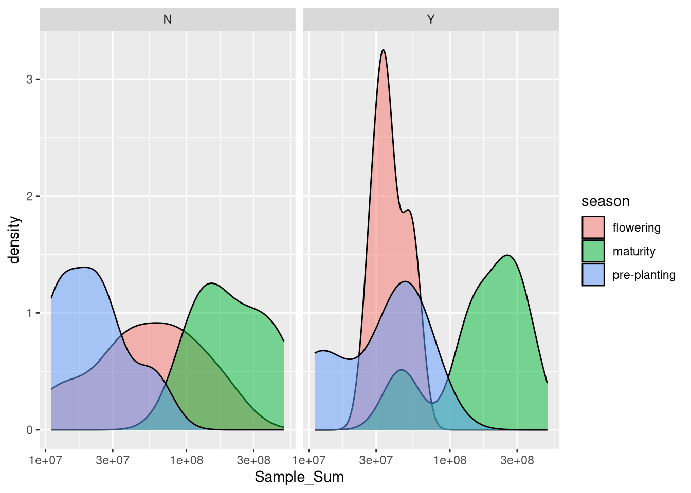

# Efficient loading of the packages
pacman::p_load(tidyverse, install = FALSE)Picking which samples to analyze
Loading packages
meta <- read_csv("zhang_meta.csv")Rows: 72 Columns: 38
── Column specification ────────────────────────────────────────────────────────
Delimiter: ","
chr (30): Run, Assay Type, BioProject, BioSample, BioSampleModel, Center Na...
dbl (5): AvgSpotLen, Bases, Bytes, version, sample_order
dttm (2): ReleaseDate, create_date
date (1): Collection_Date
ℹ Use `spec()` to retrieve the full column specification for this data.
ℹ Specify the column types or set `show_col_types = FALSE` to quiet this message.abund <- read_csv("zhang_absoluteabundance.csv") %>%
rename(sample = `Sample ID`, Sample_Sum = `Bacterial abundance`)Rows: 36 Columns: 2
── Column specification ────────────────────────────────────────────────────────
Delimiter: ","
chr (1): Sample ID
dbl (1): Bacterial abundance
ℹ Use `spec()` to retrieve the full column specification for this data.
ℹ Specify the column types or set `show_col_types = FALSE` to quiet this message.clean_meta <- meta %>%
select(Run, irrigation, sample = `Sample Name`, Rotation, season)
clean_meta$sample[clean_meta$sample %in% abund$sample] [1] "T142063_S27" "T163054_S87" "T163052_S85" "T163034_S83" "T163032_S81"
[6] "T163014_S79" "T163012_S77" "T142062_S26" "T162064_S75" "T162062_S73"
[11] "T162024_S71" "T162022_S69" "T161014_S67" "T161012_S65" "T153054_S63"
[16] "T153053_S62" "T153052_S61" "T153032_S57" "T142061_S25" "T153014_S88"
[21] "T153012_S54" "T151014_S44" "T151012_S42" "T143054_S40" "T143052_S38"
[26] "T142023_S23" "T141014_S20" "T143051_S37" "T143034_S36" "T143014_S32"
[31] "T143012_S30" "T142064_S28" "T152064_S52" "T152062_S50" "T152024_S48"
[36] "T152022_S46"clean_meta$sample[!clean_meta$sample %in% abund$sample] [1] "T163054_S128" "T163052_S126" "T163034_S124" "T163032_S122" "T163014_S120"
[6] "T163012_S118" "T162064_S116" "T153053_S103" "T153052_S102" "T153032_S98"
[11] "T153014_S96" "T143012_S70" "T142064_S68" "T142063_S67" "T142062_S66"
[16] "T142061_S65" "T142023_S63" "T141014_S60" "T162062_S114" "T162024_S112"
[21] "T162022_S110" "T161014_S108" "T161012_S106" "T153054_S104" "T153012_S94"
[26] "T152064_S92" "T152062_S90" "T152024_S88" "T152022_S86" "T151014_S84"
[31] "T151012_S82" "T143054_S80" "T143052_S78" "T143051_S77" "T143034_S76"
[36] "T143014_S72" clean_meta[!clean_meta$sample %in% abund$sample,]# A tibble: 36 × 5
Run irrigation sample Rotation season
<chr> <chr> <chr> <chr> <chr>
1 SRR18309617 N T163054_S128 SBR maturity
2 SRR18309618 Y T163052_S126 SBR maturity
3 SRR18309620 N T163034_S124 SBR maturity
4 SRR18309621 Y T163032_S122 SBR maturity
5 SRR18309622 N T163014_S120 SBR maturity
6 SRR18309623 Y T163012_S118 SBR maturity
7 SRR18309624 Y T162064_S116 CR maturity
8 SRR18309632 N T153053_S103 SBR flowering
9 SRR18309633 Y T153052_S102 SBR flowering
10 SRR18309634 Y T153032_S98 SBR flowering
# ℹ 26 more rowsfinal_meta <-
abund %>%
left_join(clean_meta)Joining with `by = join_by(sample)`There are 36 samples. The samples without corresponding abundances are the ITS/fungal sequencing, which we want to remove anyways.
See where differences lay in cell abundances
final_meta %>%
ggplot(aes(x = Sample_Sum, fill = irrigation)) +
geom_density(alpha = 0.5) +
scale_x_log10()
final_meta %>%
ggplot(aes(x = Sample_Sum, fill = Rotation)) +
geom_density(alpha = 0.5) +
scale_x_log10()
final_meta %>%
ggplot(aes(x = Sample_Sum, fill = season)) +
geom_density(alpha = 0.5) +
scale_x_log10()
final_meta %>%
ggplot(aes(x = Sample_Sum, fill = season)) +
geom_density(alpha = 0.5) +
scale_x_log10() +
facet_wrap(~irrigation)
Okay cool - it seems like season might be the axis where we see meaningful differences in absolute abundances.
Save our meta-file
write_csv(final_meta, "final_meta.csv")